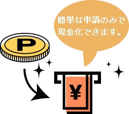

お仕事の決定！

シティポイント制度のご案内
シティポイント制度とは
★１つ 1,000円～2,000円（※1）として、様々な場面で付与します。
お仕事を継続していただくだけで自然と★が貯まるだけでなく、
皆様の頑張り次第で更に★を増やすことも可能。
頑張った方に、頑張った分だけ現金還元する、シティコンピュータ独自のポイント制度です。
※1
- ★
1つ 1,000円のお仕事
：評価、検証、テスト、実験、
試験、運用・保守 - ★
1つ 2,000円のお仕事
：要件定義、設計、実装、構築 - ※お仕事毎に設定しております。
★を貯めるには
★の獲得条件
-
1
- ★
- ★
- ★
- ★
- ★
-
2
入社（初日）
- ★
- ★
- ★
- ★
- ★
-
3
継続３ヶ月経過毎
- ★
- ★
- ★
- ★
- ★
-
4
月間無遅刻無欠勤
- ★
- ★
- ★
- ★
- ★
-
5
対象となる資格取得資格一覧はこちら
- ★
- ★
- ★
- ★
- ★
- 難易度に応じ1~5
-
6
友達紹介別途、友達紹介金制度もございます
- ★
- ★
- ★
- ★
- ★
-
7
現場でリーダーに昇格、
または同等レベルのステップアップ- ★
- ★
- ★
- ★
- ★
-
8
クライアント評価による人員増加への貢献
- ★
- ★
- ★
- ★
- ★
- 1人増加につき
-
9
当社からのキャリアアップで
正社員に決まったら- 所持 ★ × 2倍
-
10
ポイント現金化せず２年目突入
（３年目以降も同様）- ★
- ★
- ★
- ★
- ★
ポイントを使うには
★ポイントは就業開始から
1年経過のタイミングでポイント現金化可能！
以降は年2回（6月、12月）＋契約満了月にポイント現金化の
申請ができます。
貯金として貯め続けるもよし、ボーナスとして
都度換金するもよし、お好きなタイミングで現金化してください。

ポイント獲得例 ≪SE・PG職の場合≫
お仕事の決定！ ★
派遣スタート ★
1年間継続 ★★★★
1年間無遅刻無欠勤 ★★★★★★★★★★★★
現金化せず2年目に突入 ★★
２年目スタート時点で、
★★★★★★★★★★★★★★★★★★★★ 20個
40,000円の権利が得られます！
- ★ポイントマイナス要素
- ・欠勤（事前申請された有給除く）
月間3日目から★-1 - ・無断欠勤★-1
- ・自己都合による契約途中終了は
★の清算権利消滅
シティポイント制度 ★対象資格一覧
★★★★★
- ・IT ストラテジスト試験
- ・システム監査技術者試験
- ・プロジェクトマネージャ試験
- ・IT サービスマネージャ試験
- ・オラクルマスター Platinum
- ・システムアーキテクト試験
- ・ネットワークスペシャリスト試験
- ・情報処理安全確保支援士試験
- ・日商マスター
- ・エンベデッドシステムスペシャリスト試験
- ・データベーススペシャリスト試験
★★★★
- ・応用情報技術者試験
- ・オラクルマスター Gold
- ・ディジタル技術検定 1級
- ・Oracle 認定 Java プログラマ Gold
- ・XML マスタープロフェッショナル
（アプリケーション開発） - ・XML マスタープロフェッショナル
（データベース） - ・情報システムコンサルタント
★★★
- ・Android 技術者認定試験
アプリプロフェッショナル - ・PHP 技術者認定試験上級
- ・オープンソースデータベース技術者認定試験
- ・公認セキュリティマネージャー
- ・公認情報システム監査人
- ・情報セキュリティ技術認定試験 CSPM of Technical
★★
- ・Comp TIA（Server+/Security+）
- ・Android 技術者認定試験アプリベーシック
- ・Android 技術者認定試験プラットベーシック
- ・オラクルマスター Silver
- ・CAD 利用技術者試験 1 級（トレース/建築/機械）
- ・CAD 利用技術者試験（3次元1級/準1級）
- ・IT コーディネータ
- ・日商 PC1 級（データ活用/プレゼン資料作成/文書作成）
- ・電子会計実務検定 2 級
- ・電子ファイリング検定 A 級
- ・MCPC モバイルシステム技術検定 1 級
- ・P 検（ICT プロフィシエンシー検定試験）1 級
- ・C 言語プログラミング能力検定試験 1 級
- ・ディジタル技術検定 2 級
- ・情報セキュリティ技術認定試験 CSPM of management
- ・CAD トレース技能審査 建築上級
- ・CAD トレース技能審査 機械上級
- ・MIDI 検定 1 級
- ・情報検索応用能力試験 1 級
- ・Linux 技術者試験（300/303/304）
- ・VBA エキスパート（Access スタンダード/Excel スタンダード）
★
- ・オープンソースデータベース技術者認定資格 Silver
- ・情報セキュリティ技術認定試験 CSBM
- ・Java プログラミング能力認定試験 1 級
- ・基本情報処理技術者試験
- ・P 検（ICT プロフィシエンシー検定試験）2 級
- ・オラクルマスター Bronze
- ・ソフトウェア品質技術者中級
- ・日商 PC データ活用 2 級
- ・日商 PC プレゼン資料作成 2 級
- ・日商 PC 文書作成 2 級
- ・Oracle 認定 Java プログラマ資格 Bronze
- ・C 言語プログラミング能力検定試験 2 級
- ・Linux 技術者認定試験 201
- ・Linux 技術者認定試験 202
- ・MIDI 検定 2 級
- ・文書情報管理士上級
- ・Comp TIA Network+
- ・VBA エキスパート Access ベーシック
- ・VBA エキスパート Excel ベーシック
- ・パソコン技能検定Ⅱ種試験 1 級
- ・ファイリングデザイナー検定 2 級
- ・マイクロソフト認定トレーナー
- ・IT パスポート試験
- ・CAD 実務キャリア認定制度（3 次元アドミニスト/3 次元トレーサー/CAD アドミニスト）
- （3 次元アドミニスト/3 次元トレーサー/CAD アドミニスト）
- ・情報検索応用能力試験 2 級
- ・電子ファイリング検定 B 級
- ・電子会計実務検定 3 級
- ・XML マスター（XML 技術者認定制度）ベーシック
- ・コンピュータサービス技能評価試験各 1 級
- ・ディジタル技術検定 3 級
- ・情報検定 情報システム基本
- ・情報検定 情報活用 1 級
- ・CAD トレース技能審査（建設中級/機械中級）
- ・CAD 利用技術者試験（基礎/2 級/3 次元 2 級）
- ・MCPC モバイルシステム技術検定 2 級
- ・Web アドミニストレータ認定試験
- ・Access ビジネスデータベース技能認定試験 1 級
- ・情報検定（情報システム,システムデザイン/情報システム,プログラミング/情報デザイン上級）
- ・Excel 表計算処理技能認定試験 1 級
- ・PHP 技術者認定試験初級
- ・Ruby 技術者認定試験 Gold
- ・Web クリエイター能力認定試験エキスパート
- ・ビジネスキーボード
- ・Word 文書処理技能認定試験 1 級
- ・パソコンインストラクター資格認定試験 1 級
- ・文書処理能力検定 1 級（ワープロ/表計算）
- ・インターネット実務検定試験 1 級
- ・ホームページ作成検定試験 1 級